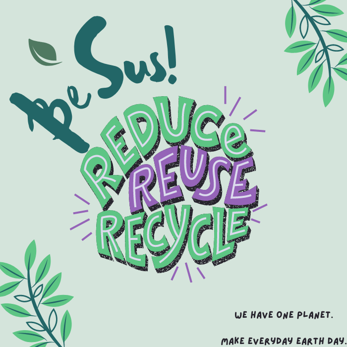

Local or organic? Hybrid or electric? Paper or plastic or neither?
Nearly all decisions today affect the environment,and figuring out
which choices matter most often feels impossible.
That's why we made BeSus!, it means be sustainable!. We are a modern
sustainability site that offers advice, clarity, and inspiration for
both the eco-savvy and the green-living novice.
Staying informed and making smart choices is critical
during this time of environmental change and opportunity.
Our History
BeSus! was founded by entrepreneur and eco-advocate Graham Hill in 2004.
With a background in architecture and design, Hill's vision was for the site
to serve as a vehicle for driving sustainability mainstream - and to do so with
a modern twist.
In 2007, TIME included BeSus! in their selection of “Top 25 Blogs” and Nielsen
Online ranked BeSus! as the number one sustainability blog. The small staff grew
into an international team of experts, and more accolades followed.
We've grown a lot since then, and we're steady on our feet. But the BeSus! mission
remains true to those original values, and we will continue driving sustainability
mainstream until the job is done.